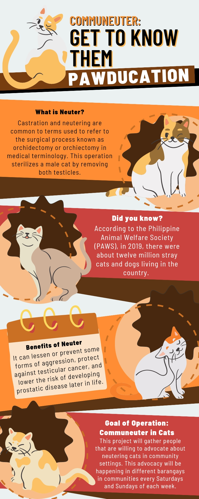

Discover the Advocacy that Promotes Neutering in the Community
Infographics

What is Neutering?
Neutering
Neutering is a surgical procedure performed on animals, mainly cats and dogs.
It involves the removal of reproductive organs: testicles in males (castration) and ovaries/uterus in females (spaying).
Neutering is done under general anesthesia. In males, neutering removes the source of sperm and male hormones like
testosterone. In females, spaying prevents heat cycles, eliminates the possibility of pregnancy, and reduces the
chances of reproductive disorders and cancers. Neutering is a routine and safe procedure commonly performed by
veterinary professionals.